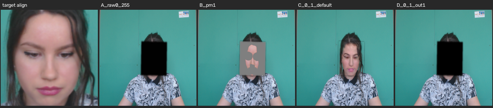

Region traces
Landmarks per frame → mean R/G/B colour in elliptical ROIs: forehead, both cheeks, full face — sized so residual landmark jitter can't dominate the average.
Two real face videos. Ten GPU-generated fakes — from mild temporal smoothing to modern neural identity swaps and swap→smooth chains. One signal no generator reproduces: the blood-flow pulse in real skin. The whole detector — every model — runs on the GPU.
Landmarks per frame → mean R/G/B colour in elliptical ROIs: forehead, both cheeks, full face — sized so residual landmark jitter can't dominate the average.
The Plane-Orthogonal-to-Skin algorithm turns each colour trace into a pulse signal.
SPR — strength of the heart-rate spectral peak in dB. Coherence — do all regions show the same pulse?
REAL iff SPR ≥ 4 dB and coherence ≥ 0.35 and BPM is physiological (45–140).

Landmarks, frame 50. 478 points from both backends overlaid — green MediaPipe, red GPU mesh, all 478/478 detected. Point-by-point comparison of every frame gave the 6–9 px residual (4–5.5 px at ROI anchors) that bounds the GPU path's accuracy.

Neural-swap calibration. The aligned target face (left) and four input/output scaling variants
of inswapper_128 on the same frame — only the correctly-ranged variant (C, 0–1 in / 0–1 out) pastes cleanly.
This check from tools/validate_gpu.py produced every nnswap clip.
| generator | technique | clips |
|---|---|---|
| smooth | Temporal average (19-frame box-car) — the pulsation-free “generated” look. k doubles as a strength dial: k=2 barely visible, k=15 heavy. | fake_smooth_s1 · fake_smooth_s2 · fake_smooth_k2_s1 · fake_smooth_k15_s2 |
| swap | Classic landmark-warp + Poisson blend of a donor face. | fake_swap_s2toS1 · fake_swap_s1toS2 |
| nnswap | Modern neural swap — SCRFD detect → ArcFace identity → 554 MB generator → feathered paste-back, all on GPU. | fake_nnswap_s2toS1 · fake_nnswap_s1toS2 |
| nnsmooth | The strongest set members: neural swap then temporal smoothing stacked on top — what a generator would plausibly ship. | fake_nnsmooth_s2toS1 · fake_nnsmooth_s1toS2 |
The four k2 / k15 / nnsmooth clips were generated after the detector's configuration was frozen, and never used to tune anything — they are the held-out check.
The same 12 clips, features and thresholds on both sides — only the landmark source differs. The GPU path runs every model on CUDA; MediaPipe's Windows build cannot use the GPU at all, so it is the CPU baseline.
| clip | SPR (dB) | coherence | BPM | GT BPM | verdict |
|---|
Real skin agrees across face regions — every real bar clears the line, every fake bar stays under it.
nnswap clips keep a strong pulse peak (up to 19.8 dB — above every naive swap); even mild k=2 smoothing keeps 19.8 dB. SPR alone would call them real.

Positive class = FAKE. Ground truth: 2 real clips, 10 fake clips. Every metric below is computed from the per-clip verdicts in Table 1 — nothing is rounded in our favour.
Both backends classify all 12 clips correctly — recall on fakes is 100% on both: no fake ever passed, including the two swap→smooth chains generated after the configuration was frozen. What separates the backends is not accuracy but margin: the weakest real clip minus the strongest fake clip is +0.22 coherence on GPU vs +0.15 on the CPU baseline.
Read these with care. The test set is 12 clips from only 2 subjects: one real-side miss would move accuracy 8 points, and the specificity estimate still rests on two real clips. This is a feasibility result, not a benchmark score.
Coherence is shown because it decides the verdict. Both backends return the same verdict on all 12 clips.
| clip | coherence MediaPipe | verdict | coherence GPU | verdict |
|---|
No row is shaded — the backends agree everywhere. The GPU's advantage is visible in the right-hand column:
every fake sits further below the threshold (hardest fake 0.246 on GPU vs 0.321 on CPU), and
real_s1 — the hardest real clip — clears the threshold at 0.468 on both.
Both backends verdict all 12 clips correctly, but the GPU keeps every fake further from the threshold: the hardest fake lands at 0.25 coherence vs 0.32 on the CPU. A verdict with a bigger margin survives noise, compression and shorter clips.
On the GPU path, any coherence threshold between 0.25 and 0.46 returns the same 12/12 result — the decision is carried by the signal, not by a lucky cut-off. The CPU's safe band is narrower.
One-Euro smoothing plus skin patches sized at 8% of the face average out the mesh's residual jitter, so real clips keep coherence at 0.47 or above — the same pulse quality the CPU baseline gets, from pure CUDA landmarks.
MediaPipe's Windows build cannot use the GPU at all. The GPU path replaces it with SCRFD detection + 478-point mesh on CUDA — face detection, identity embedding, the swap generator and trace extraction all run on the RTX 5070.
SCRFD face detection, 478-point face mesh, ArcFace identity embedding and the 554 MB inswapper generator — all loaded on CUDA (onnxruntime-gpu 1.26). Utilisation sampled with nvidia-smi during the full 12-clip run.
| stage | util (mean / peak) | memory peak | power (mean) |
|---|---|---|---|
| neural-swap generation (720 frames) | 23% / 74% | 3.9 GB | 57 W |
| GPU trace extraction (12 clips) | 31% / 39% | 1.8 GB | 70 W |
| MediaPipe CPU extraction (12 clips) | ~0% (GPU idle) | — | 23 W |
Generation peaks at 74% because the decode → GPU swap → ordered paste pipeline keeps the generator fed. One honest caveat: MediaPipe's CPU build extracts landmarks faster (~175 vs ~60 fps) because it tracks across frames — the GPU path exists because MediaPipe's Windows wheel cannot use the GPU at all. It is what keeps the whole pipeline on the card.
Synthetic fakes are generated from the dataset for research only.
uv sync # onnxruntime-gpu 1.26 + CUDA 12 libs
uv run python deepfake_detect.py --frames 360 # generate all 10 fakes + full run (GPU auto)
uv run python deepfake_detect.py --extractor mediapipe # CPU baseline run
uv run python tools/validate_gpu.py # landmark / inswapper validation
uv run python tools/exp_final.py # replay the 12-clip comparison from cachesModel weights (716 MB) are published as a
GitHub release ↗ —
put inswapper_128.onnx and mesh.onnx in models/, and
det_10g.onnx + w600k_r50.onnx in models/buffalo_l/
(SHA-256 prefixes and upstream sources are on the release page). MediaPipe's face_landmarker.task
downloads automatically.
Outputs: output/deepfake_ppg_results_{gpu,mediapipe}.json (per-clip features + GPU telemetry),
output/deepfake_ppg_demo_{gpu,mediapipe}.png, per-stage gpu_*.csv traces.